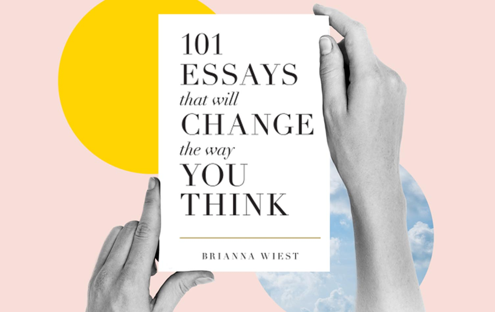

101 essays That Will Change the Way You Think" is a collection of short, thought-provoking essays by author Brianna Wiest. Published in 2016, the book aims to challenge readers'
perspectives and inspire personal growth through reflections on a wide range of topics.
The essays cover subjects such as:
Finding purpose and meaning in life
Overcoming psychological biases and irrational thoughts
The importance of mindfulness, stillness, and simplicity
Developing healthy habits and routines
Understanding the nature of happiness and fulfillment
Navigating relationships and emotions
Throughout the book, Wiest emphasizes the idea that our thoughts shape our reality and that by becoming more conscious of our thought patterns, we can improve our experiences and
lead more purposeful lives. She argues that happiness is a choice and that we often sabotage our own well-being by clinging to unhealthy thought habits instilled by social conditioning.
To help readers break free from these patterns, Wiest offers practical advice and reflection prompts. Some key takeaways include:
Accepting the present moment and finding joy in the ordinary
Focusing on what you can control rather than worrying about the future
Cultivating self-compassion and letting go of shame
Prioritizing personal growth over external validation
While the essays are stand-alone pieces, they share common themes and build upon each other to create a cohesive exploration of the human experience. Wiest's writing is described as
eloquent, easy to read, and effective in making readers pause and reflect on their own lives.
Overall, "101 Essays That Will Change the Way You Think" offers a thought-provoking and accessible guide to personal development. By challenging readers to examine their beliefs and
thought patterns, the book aims to help them find greater purpose, happiness, and self-understanding in their lives.